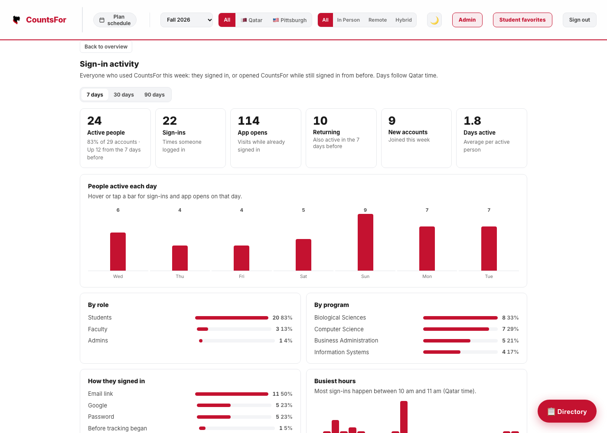

In one paragraph. The admin Overview already showed a "Signed in this week" number, but it was not clickable and it was not measuring much: the database only kept each person's single most recent login, and because a CountsFor session lasts 30 days, most people who came back never logged in again and were never counted. Phase 1 (built, running locally, not yet deployed) fixes the measurement and turns that number into a full Sign-in activity page. Phases 2 and 3 below are proposals for the team to agree on before anything else is built.
We collect only what helps the people running CountsFor make decisions. Each question names who asks it.
| Question | Who asks | Answered by |
|---|---|---|
| Is anyone actually using CountsFor? | Prof. Silvia, area heads | Active people per day / week / 30 / 90 days Phase 1 |
| Who is using it, students or faculty? Which majors? | Area heads, advisors | Breakdown by role and program Phase 1 |
| Do people come back after the first visit? | Team | Returning people, days active per person Phase 1 |
| When do people use it (registration week, evenings)? | Team, IT | Daily chart, busiest hours Phase 1 |
| Which parts of the site get used: search, trees, planner, wishlist? | Team | Feature usage events Phase 2 |
| Where do new users drop off? | Team | Onboarding funnel Phase 2 |
| How does this semester compare to last? | Prof. Silvia | Semester report and weekly digest Phase 3 |
On the admin Overview, the Signed in this week card is now a button. It opens a Sign-in activity page with a 7 / 30 / 90 day switch. The New this week card opens the same page filtered to new accounts.

| Metric | Exact definition |
|---|---|
| Active people | Distinct accounts that signed in or opened CountsFor while already signed in, at least once in the period. Also shown as a share of all accounts and compared with the same-length period before. |
| Sign-ins | Successful logins (Google, password, email link, or creating an account). |
| App opens | Times a signed-in person loaded CountsFor (each call to GET /api/me). |
| Returning | Active in this period and also active in the period right before it. |
| New accounts | Active people whose account was created inside the period. |
| Days active | Average number of different days each active person used CountsFor. |
| People active each day | Bar chart, one bar per day; hovering shows that day's sign-ins and app opens. |
| Breakdowns | By role (student / faculty / admin), by program, by sign-in method, and sign-ins by hour of day. |
| Who was active | Searchable, sortable table: name, email, role, program, days active, sign-ins, app opens, last seen, how they last signed in, New and Returning badges. Exports to CSV. |
All days are counted in Qatar time (UTC+3, no daylight saving), so "today" on the page is the same calendar day people in Doha see.
backend/auth.py calls mark_signed_in()GET /api/me calls record_visit(); it can never break the pagesign_in_events (one row per login) and user_activity_days (one row per person per day)GET /api/admin/sign-ins?days=7|30|90, checked on the serverOne row per person per day keeps the activity table tiny: 1,000 daily users for a full year is about 365,000 short rows. The tables are created automatically on the next Render deploy (the pre-deploy step runs create_all and the migrations). On that first deploy, each existing user's last login is copied in once as a "before tracking began" sign-in, so the page is not empty on day one.
In the admin Courses editor, pressing Add course or Save changes used to show only a small toast bubble and leave you on the same form; pressing Save again showed "Nothing has changed." It now goes straight to a Course added / Changes saved confirmation with the course's units, campus, what it counts for and a list of what changed, plus buttons to go back, view it as a student, edit again or add another. Form errors appear next to the button and highlight the field. A category typed into a "Pick or type" box but never added with its Add button is now saved too, instead of being silently dropped.
A single POST /api/usage endpoint with a short fixed list of event names: search, course_open, tree_open, plan_create, wishlist_add, export, share. Stored as daily counts per role group and program, not per person.
Shows which features to invest in and which nobody uses.
Accounts created, then profile completed, then first course opened, then first save or plan. Computed from data we already have plus Phase 2 counts.
Shows where new students give up. The Overview already counts "Unfinished profiles"; this adds the steps after it.
Estimated effort: about 3 to 4 days including tests. No new libraries; the frontend keeps its zero-dependency rule.
backend/email_util.py and a scheduled job.feat/admin-page).feat/admin-page into main; Hind syncs her fork so the daily scrape and the app are on the same code./health says "status": "ok"; it reports "degraded" and names any missing table, which would include sign_in_events or user_activity_days.| Decision | Options | Suggested |
|---|---|---|
| Who can see the activity page? | Admins only, or also area heads | Admins only for now |
| Keep activity data for | One semester, 13 months, forever | 13 months |
| Show a notice to users? | Yes / no | Yes, one line on sign-in |
| Build Phase 2? | Now, after merge, not at all | Right after the Phase 1 deploy is verified |
| Weekly digest recipients | Admins, area heads, Prof. Silvia | Admins and Prof. Silvia |
| Piece | File |
|---|---|
| Tracking | backend/activity.py (mark_signed_in, record_visit, Qatar day helper) |
| Tables | backend/models.py: SignInEvent, UserActivityDay; documented in backend/schema.sql |
| One-time backfill | backend/migrate.py: _backfill_sign_in_history |
| API | backend/admin.py: GET /api/admin/sign-ins; Overview "Signed in this week" uses the same data |
| Page | js/app.js: _openSignIns, _renderSignIns, _renderSignInTable; styles in css/styles.css |
| Tests | backend/tests/test_admin.py (5 new tests, all passing) |